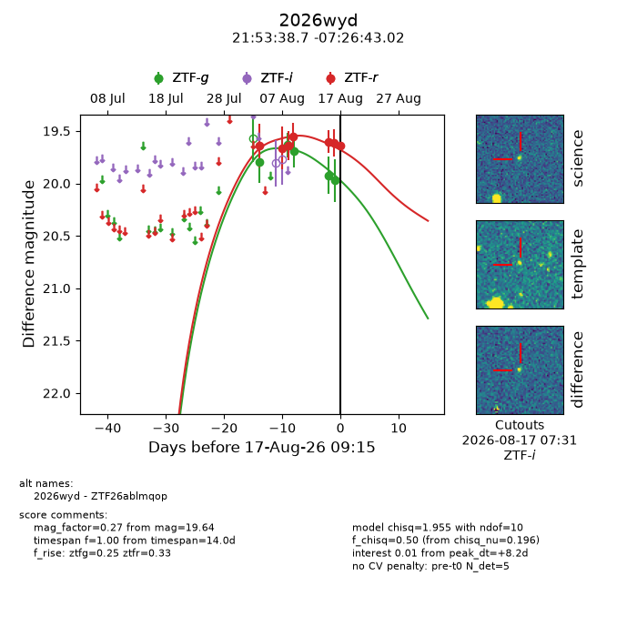
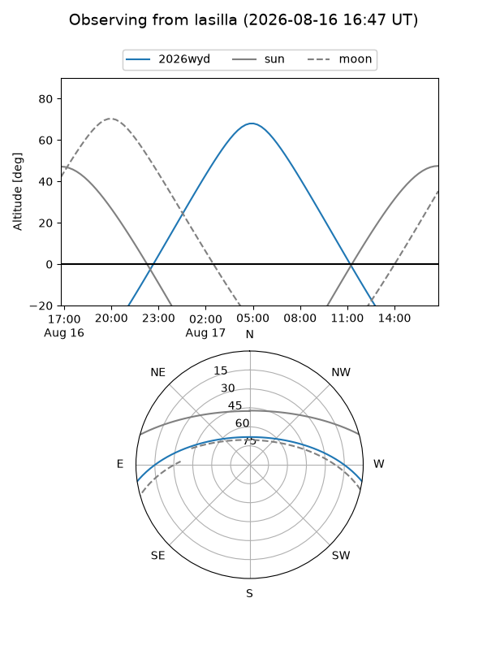
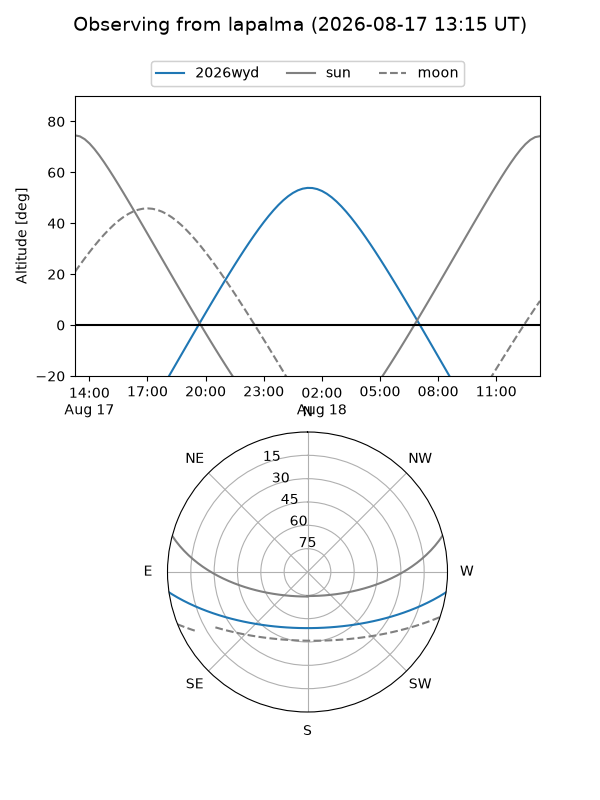
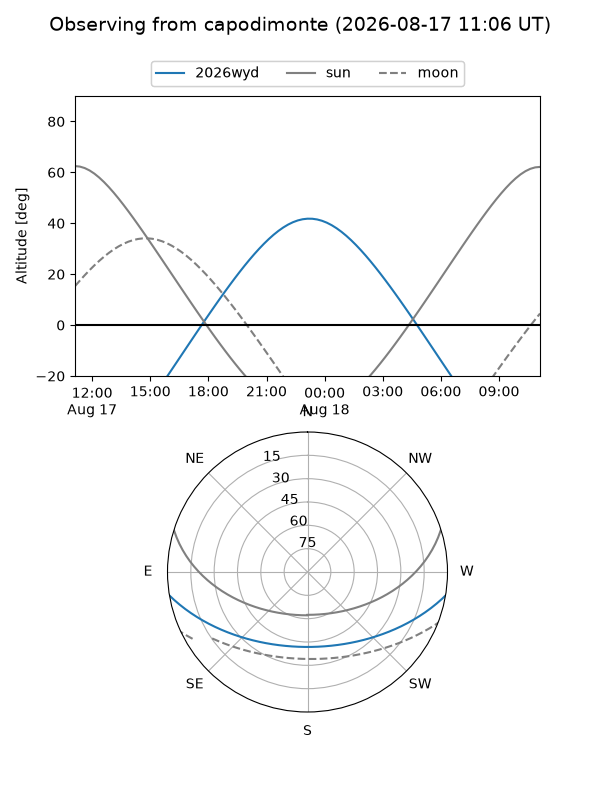
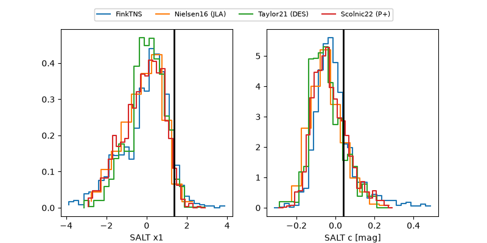

2026wyd
Target 2026wyd at 2026-08-17 09:19
Aliases and brokers:
FINK-ZTF: ztf.fink-portal.org/ZTF26ablmqop
Lasair-ZTF: lasair-ztf.lsst.ac.uk/objects/ZTF26ablmqop
ALeRCE-ZTF: alerce.online/object/ZTF26ablmqop
YSE-PZ: ziggy.ucolick.org/yse/transient_detail/2026wyd
TNS name: wis-tns.org/object/2026wyd
Direct TNS query: direct search
alt names
ZTF26ablmqop (ztf,fink_ztf)
2026wyd (tns,yse)
Coordinates:
equatorial (ra, dec) = 328.4113,-7.44528
equatorial (HMS+DMS) = 21:53:38.72,-07:26:43.02
galactic (l, b) = (49.5663,-43.55717)
Flags:
TNS type: nan
peak dt: +8.2
Photometry:
last ztfg=19.97, ztfr=19.64
5 ztfg, 7 ztfr detections
Lightcurve

Visibility



Additional plots
